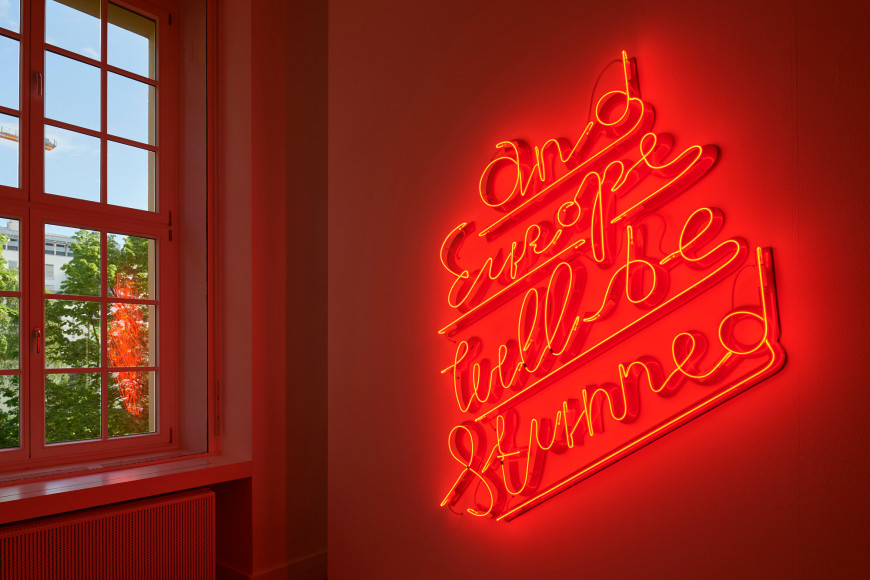

Yael Bartana
Stalag - The Photographer (II)
2015

Yael Bartana
What If Women Ruled The World
2016

Yael Bartana
Installation view, Redemption Now
2021
Yael Bartana (b. 1970, Kfar-Yehezkel, Israel)
Yael Bartana’s films, installations and photographs explore the imagery of identity and the politics of memory. Her starting point is the national consciousness propagated by her native country of Israel. Central to the work are meanings implied by terms like “Homeland”, “Return” and “Belonging”. Bartana investigates these terms through the ceremonies, public rituals and social diversions that are intended to reaffirm the collective identity of the nation state. In her Israeli projects, Bartana deals with the impact of war, military rituals and a sense of threat to everyday life. In 2006, the artist worked in Poland to create projects on the history of Polish-Jewish relations and its influence on the contemporary Polish identity. In 2011, Yael Bartana represented Poland for the 54th International Art Exhibition in Venice.
Inspired by a Jewish custom in which sins are cast into the sea, Tashlikh (Cast Off) (2017) serves as a platform for both perpetrators and survivors of various genocides or ethnic persecutions to confront their personal material links to the horrors of the past.
Bartana has had numerous solo exhibitions including Cecilia Hilllström Gallery, Stockholm (2022); Philadelphia Museum of Art, Philadelphia (2021); the Jewish Museum, Berlin (2021); Galleria Rafaella Cortese, Milan (2020); Annet Gelink Gallery, Amsterdam (2019); Volksbühne, Berlin (2018); Aarhus 2017 European Capital of Culture (2017); Musée Cantonal des Beaux-Arts, Lausanne (2017); Stedelijk Museum, Amsterdam (2014); Secession, Vienna (2012); Tel Aviv Museum of Art (2012); Moderna Museet in Malmö (2010); the Museum of Modern Art in Warsaw (2009); MoMA PS1, New York (2008); the Kunstverein in Hamburg (2007) and the Van Abbemuseum in Eindhoven (2006). She has also participated in such prestigious group shows at James Cohan Gallery, New York (2020); the Stedelijk Museum, Amsterdam (2018); São Paulo Biennial (2010 and 2006); documenta 12, Kassel (2007); among many others. She is a winner of numerous prizes and awards: Artes Mundi 4 (Wales, 2010); Prix Dazibao (Montreal, 2009); Nathan Gottesdiener Foundation Israeli Art Prize (2007); Dorothea von Stetten Kunstpreis (Kunstmuseum Bonn, 2005); Prix de Rome (Rijksakademie, Amsterdam, 2005) and the Anselm Kiefer Prize (2003).
She has works in the permanent collections of Tate Modern, London; The Jewish Museum, New York; The Guggenheim, New York; Centre Pompidou, Paris; Museum of Modern Art, Warsaw; The Israel Museum, Jerusalem; Kunstmuseum, St. Gallen, Switzerland; Van Abbe Museum, Netherlands; and Stedelijk Museum, Netherlands, among others.
WORKS IN PRIVATE AND PUBLIC COLLECTIONS
Yael Bartana
Stalag - The Photographer (II)
2015
Yael Bartana
What If Women Ruled The World
2016
Yael Bartana
Installation view, Redemption Now
2021
Yael Bartana
and Europe will be stunned
2007 - 2011
Yael Bartana
My Sister Eva
2004
Yael Bartana
Kings of the Hill
2003
Join our mailing list to be among the first to receive gallery news.
520 W 25th Street
New York, NY 10001
Tel 212 680 94